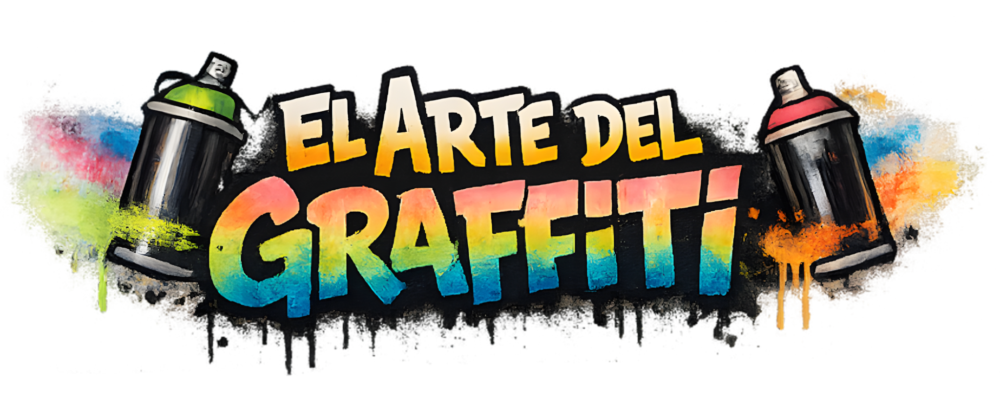
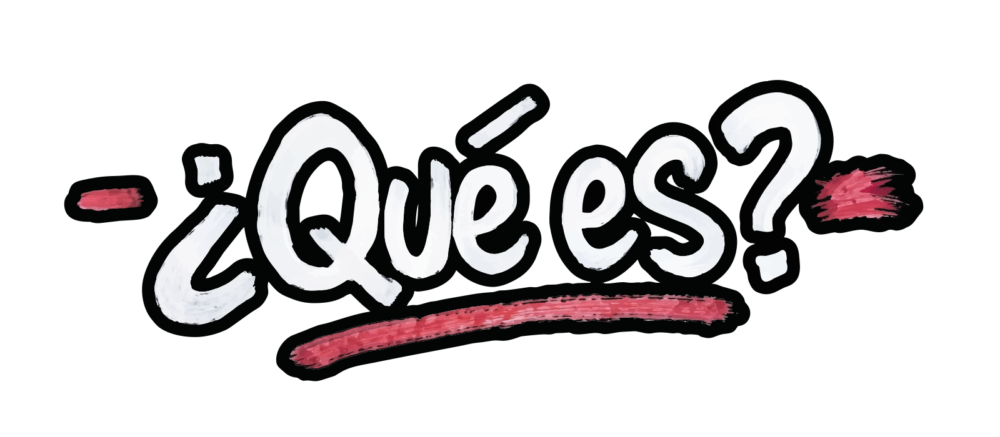
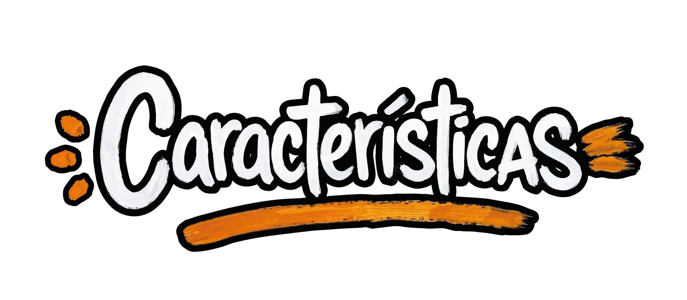
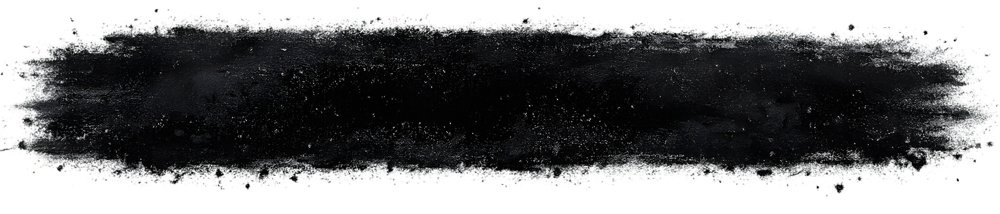
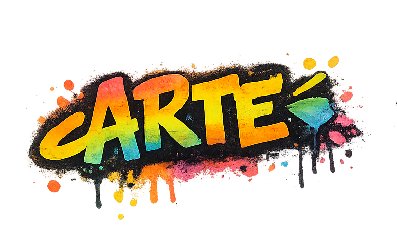
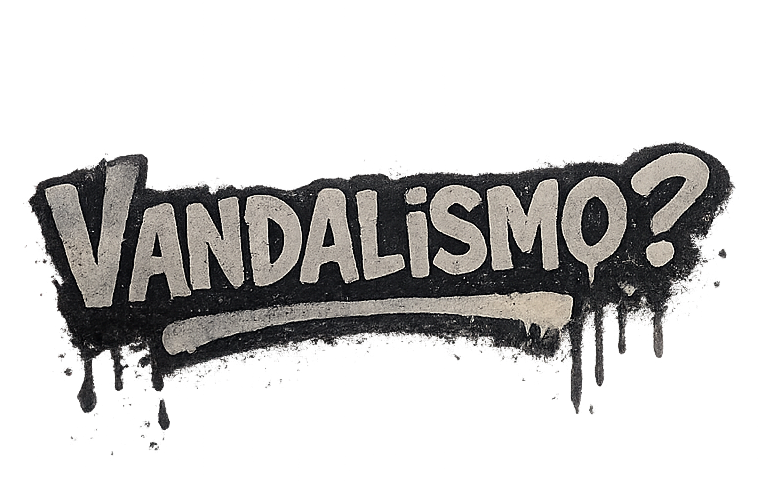

Nace desde la ciudad y habla por ella. El graffiti expresa ideas, emociones y críticas que cualquiera puede ver, sin filtros ni reglas. Es una forma libre y directa de decir algo… justo donde todos pasan.

